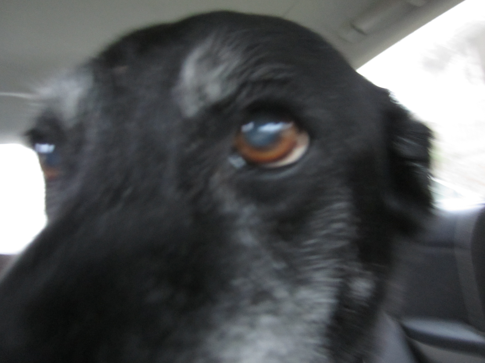

Great things that happened this year.
- I got to see family for almost an entire month.
- I did well in Spring, Summer, and Fall sessions of school.
- I learned that it is ok to feel bad, alone, sick.
- I (re)learned that God does His work even when I don’t feel or see anything.
- I worked a couple of interesting jobs (barista, vehicle lift maint./installer).
- I changed my degree path to computer science! (I really, really enjoy pushing code.)
- Rode my bike to school on a regular basis.
- Went to Estes Park with my wife.
- (Maybe) Got a co-op position with a local company this coming summer.
- Got an interesting/fun project building Computational Photography tutorials!
- Got enough sleep, enough food on most days.
Not so great things that happened this year.
- Pounce died. Miss you, bud.
- Penny died. Miss you.

- Didn’t lose weight.
- Ate whatever.
- Didn’t exercise regularly.
What is this? A pep talk?
Part of me wants to go all drill instructor on myself: man up, pull yourself together, work harder… Part of me wants a gentler approach. Something sustainable. I suppose I could try and change all my habits all at once this coming year. I’ve tried that before and I haven’t been able to maintain. This coming year will be a slow one. Gentle, forgiving, with malleable expectations.
A lot of good changes happened this year, and while I’m disappointed that I didn’t get some things done, I know that what did get done was worth it. The deep work, the changes that God has allowed me to make, these are worth my focus and effort.
Coping with loss.
I don’t know what to say, really. I’m not even sure how to say goodbye. I’ve lost a lot of pets (Chloe, Muffin, Silver, Fleur, Tigris, Harry, Peaches, Spike, Kitty, Newman …). It doesn’t get easier. I don’t have advice for those of you who have also been through this.
Pets are an opportunity to learn how to love unconditionally, to learn how to serve.
I came across this idea somewhere (if you find a source, contact me); you are your pet’s whole world. Their life and well-being orbits you. I hadn’t heard it put like that before.
What about next year?
I only have a vague idea of what comes next. I have two semesters left of school, and six months of full-time work coming up. Beyond that, and some minor side projects, 2019 is a big question mark.
I know some things that I’d like to achieve this coming year…
- A working 3D printer. (Seriously, I just want to move on to making stuff.)
- Weigh a reasonable amount. (And get there in a healthy and sustainable way.)
- Eat stuff that’s good for my body.
- Some kind of service related work.
- Start playing an instrument again.
And so on. We’ll see. Some of these are more important to me than others.
Praise God for this year that’s gone. I pray your coming year is a fruitful one.